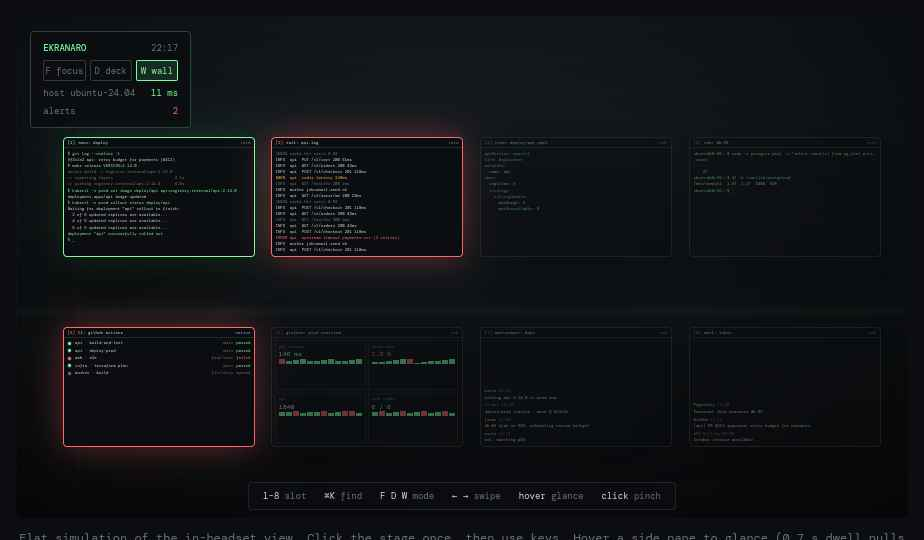

An open-source DevOps cockpit for Meta Quest 3. Your Ubuntu windows as numbered slots in space, three layouts to arrange them, and alerts that find you.
ekran·aro — Esperanto, “a set of screens”

Ops work is many small windows: terminals, SSH sessions, a log tail, a rollout status, CI, Grafana, chat. VR desktops today (Virtual Desktop, Immersed, Horizon Workrooms, WayVR, Stardust XR) stream monitors or screens into space. None of them know what a window, a hotkey or an alert is, and only the last two run from a Linux host.
Ekranaro treats each window as a slot, keeps switching on the keyboard, and adds a wall mode so you can watch everything at once and be pulled to what breaks.
ekranaro-agent (Ubuntu 24.04/26.04, Rust) ekranaro-quest (OpenXR, Quest 3)
per-window capture xdg-desktop-portal hardware H.265 decode → Vulkan textures
encode H.265 VA-API / NVENC slots · modes · dock · wrist panel
input libei / uinput hand tracking · head-pose gaze · passthrough
collectors CI APIs · Prometheus native panels: CI board · alert feed
discovery mDNS · QR pairing
──── Wi-Fi 6E or USB-C · WebRTC/QUIC · ~10–20 ms ────
No PC-side VR runtime. The host streams windows and data; spatial logic runs on the headset.
Three repos: agent, quest, spec. The spec is a short protocol document for slots, modes and alerts, so other clients and agents can follow it. Good first issues: Wayland per-window capture on Ubuntu 24.04 and 26.04, VA-API path for Intel iGPUs, GitLab CI collector, shared log alert ruleset, left-handed wrist panel.